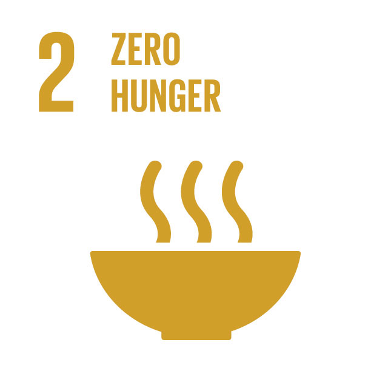
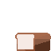
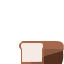
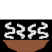

Bibliography
Here are the sources for this topic which helped in the research:
- United Nations. "The State of Food Security and Nutrition in the World 2021." UN Website.
- World Food Programme. "Hunger Facts." WFP Website.
- FAO. "Home page." FAO Homepage.
- Global Hunger Index. "2021 Global Hunger Index." GHI Website.
- Monash University. "Zero Hunger." Monash Website.
- World Food Programme. "How to End World Hunger: 6 Zero Hunger Solutions." WFP USA.
- World Food Programme. "Donate to WFP." Donate
- World Hunger Facts & Statistics Delivery Rank
Images used or not




